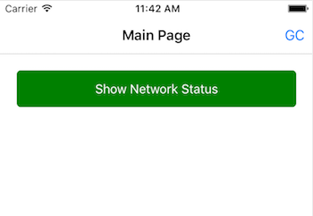
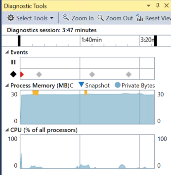
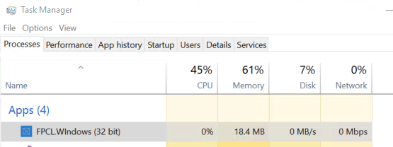

Duration
10 minutes
Goals
In this exercise, we will identify a memory leak in a Xamarin.Forms application which is being caused by an event handler. You can use the Xamarin Profiler (if you have it installed), or use the techniques outlined below to identify the issue.
Assets
The provided Exercise 2 folder contains a sub-folder named Start with a pre-built Xamarin.Forms application. You can use any of the platform head projects as your testing platform.
Challenge
We will first need to see if there is a leak in this application.
- GC logging has been turned on in this application for Xamarin.iOS and Xamarin.Android (see CSC270 for detailed instructions on how to do that).
- For desktop UWP, use Task Manager to track the memory size.
Once we've recognized there is a leak, we will begin to look for it based on our app behavior.
- What is the app doing when the leak occurs?
- What happens in the code which is executed when the leak happens?
- Verify that we've identified the leak using a finalizer.
- Fix the leak.
- Verify the changes.
Steps
Below are the step-by-step instructions to find and fix the memory leak.
Check for memory leaks in our app
Let's start by running our application and seeing if it is leaking memory.
- Open the starting NetworkState application from the Exercise 2 folder.
- Build the solution and then run the application in your platform of choice. Here we show it running in iOS: 
- Click the GC button in the toolbar to force a GC - you should see output in the IDE. We are particularly interested in the major generation current size / previous size value:
- In Visual Studio for Windows, you will see this value shown graphically as an increasing line in the diagnostic view: (note that in the desktop apps it's a very slow increase which may be harder to spot - use Task Manager instead). 
- Finally, for Windows UWP desktop apps, use Task Manager to watch the memory value: 
- Play with the app - there's not much to do with it. Just click the "Show Network Status" button which navigates to a second screen. The screen background will be green when you are connected to a network and red if you are disconnected.
- Do this transition several times (back and forth between the screens). You should notice that your memory continues to grow. In the Xamarin apps, use the "GC" button to force a GC and look at the diagnostic output to see it growing. In Visual Studio, use the diagnostics window or Task Manager.
NetworkStateiOS[5553:1469657] info: GC_MAJOR: (user request) pause 5.79ms, total 5.78ms, bridge 0.00ms major 2944K/2288K los 61K/0K
Identify the leak
We clearly have a memory leak when transitioning to the second screen.
-
Open the ProblemPage.cs source file and examine the code - it's quite short. You can ignore the "buffers" section at the end, it's there to give the page a bit more bulk and make the leak easier to see since the
ContentPagesize is relatively small by default. -
Let's verify that the leak is a result of this page. Add a
Debug.WriteLineto the constructor of theProblemPageand output that the page has been created. -
Create a finalizer on the
ProblemPageand output that the page is about to be collected. Make sure to surround your finalizer code in a#if DEBUGstatement! - Run the app again and switch back and forth between the pages. Does the problem page get collected? Force a GC by clicking the toolbar button - does it get collected now?
Fixing the leaking page
Recall from the lecture that delegates and events are a common source of live references which cause memory leaks in managed code. Notice that the constructor is wiring up an event handler to the CrossConnectivity.Current.ConnectivityChanged event. It turns out that this event is static under the covers - which means our pages are never going to be collected!
- We need to unwire from the event. The best place to do this in a Xamarin.Forms application is by overriding the
OnDisappearingmethod. Do it there. -
Now, let's make sure this is properly paired - it's possible to create the page and reuse it in some cases, so we don't really want to wire up to the event handler in the constructor. Instead, move that registration into the
OnAppearingoverride so it's properly matched with our un-wiring of the event. - Run the app again and watch the debug window - does the page get collected now?
Summary
In this exercise, we have identified a problem in a Xamarin.Forms application due to an event handler tied to a static event. We corrected this by properly unregistering from the event handler. This is something you should always watch out for in your code - no matter what type of .NET application you are building!